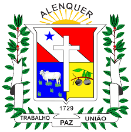
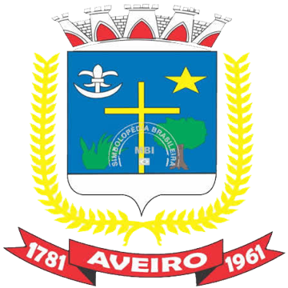
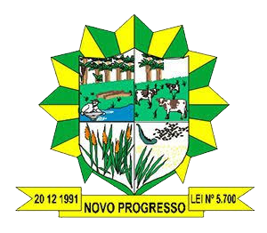
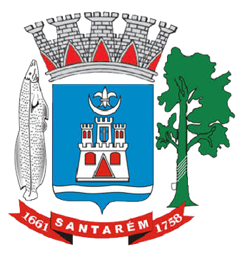
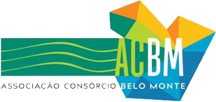
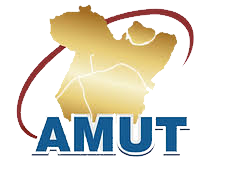

Consultoria especializada em gestão pública municipal
Cada repasse federal que você deixa de receber é uma obra que não sai do papel
A Alter Consultoria está em Brasília há mais de 30 anos para garantir que os recursos federais cheguem ao seu município: acompanhamos convênios, repasses e prazos junto aos Três Poderes, para você governar sem perder verba por burocracia ou desinformação.
Agende uma reunião sem compromissoO cenário
O que trava os recursos do seu município
Conseguir e manter recursos federais exige atenção diária e domínio de regras que mudam o tempo todo. Na prática, a prefeitura esbarra em quatro problemas:
Burocracia excessiva
Normas e exigências que travam projetos essenciais e atrasam a chegada dos recursos.
Trâmites descentralizados
Múltiplas plataformas, com etapas que se perdem sem um acompanhamento contínuo.
Desencontro de informações
Falta de um canal claro e unificado, gerando dúvidas, retrabalho e possíveis perdas.
Riscos e penalidades
Uma exigência não cumprida pode suspender repasses e travar a gestão.
“Cada obstáculo superado é mais um recurso trabalhando pelo seu município.”
A solução
Do planejamento à execução, você não caminha sozinho
Nossa equipe experiente acompanha cada etapa, reduz riscos e abre caminhos para que mais recursos cheguem ao município. Você foca em governar; nós cuidamos do que depende de Brasília.
“A expertise transforma obstáculos em caminhos para o progresso.”
Quem somos
Mais de 30 anos abrindo portas em Brasília para os municípios
Nascemos da experiência de profissionais que, há mais de três décadas, apoiam prefeituras e entidades municipalistas. Conhecemos por dentro o funcionamento político e burocrático federal, e sabemos a quem recorrer e como.
Cada entrega é feita com rigor e inteiramente a serviço do seu município.
Nossa abordagem
Consultoria sob medida: sem pacote pronto
Cada município tem demandas, realidade e cultura próprias. Por isso desenhamos um serviço completo para a sua gestão, e não um modelo genérico.
Para nós não existe modelo padrão. Existe a solução adequada para cada município.
Atuação ampla
Presentes onde as decisões são tomadas
Estar em Brasília é o nosso diferencial. Defendemos os interesses do seu município junto aos Três Poderes, órgãos federais e autarquias.
Executivo
Atuação junto aos ministérios, autarquias e órgãos federais responsáveis pelos programas e repasses necessários ao município.
Legislativo
Interlocução junto ao Congresso Nacional, no acompanhamento de pautas, emendas e proposições de interesse direto da sua gestão.
Judiciário
Acompanhamento pontual e apoio institucional nas demandas municipais que envolvem a esfera judicial.
No dia a dia
Acompanhamento estratégico, perto do que — e de quem — importa.
- Fluxo constante de informações sobre programas, convênios federais, repasses e demais pendências financeiras.
- Presença junto aos órgãos de interesse: comparecimento, realização de protocolos e articulação perante ministérios e autarquias.
- Apoio no atendimento e marcação de compromissos, agendas estratégicas, reuniões e audiências.
- Suporte no trâmite orçamentário e apoio na priorização de demandas.
Tecnologia
Todos os repasses na palma da mão
Desenvolvemos um software próprio, customizado para a sua prefeitura, que mostra pagamentos e repasses de forma clara e atualizada.
Panorama atualizado
Visão geral à medida que os sistemas são alimentados pelos órgãos e gestores competentes, com acompanhamento de perto de cada repasse.
Acesso remoto
A qualquer hora e por diferentes dispositivos, conforme a quantidade de perfis ofertados.
Suporte dedicado
Profissionais de apoio dedicados à manutenção e solução de problemas sistêmicos.
Plataformas digitais que acompanhamos para você
- TransfereGovPlataforma +Brasil / antigo SICONV
- SIAFIExecução orçamentária e financeira
- SICONFICAUC e CADIN · STN
- FNDE · SIMEC · SIOPEEducação
- FNS · SISMOB · SIOPSSaúde
- FNAS · Rede SUASAssistência social
- Portal da TransparênciaAcompanhamento público de recursos
- Diário Oficial da UniãoPublicações e atos oficiais
Estrutura em Brasília
Quando vier a Brasília, nossa estrutura é sua
Poucos oferecem uma base física na capital, ao lado das sedes dos Poderes. Com agendamento prévio, o município usa a nossa estrutura:
Salas de reuniões
Equipadas para apresentações e encontros.
Auditório
Com recursos audiovisuais, disponível para eventos.
Apoio logístico
Deslocamento pela cidade: aeroporto, hospedagem e compromissos.
Por que a Alter
Por que escolher a Alter
Ter a Alter é ter em Brasília um parceiro estratégico dedicado ao sucesso da sua gestão.
Representação local qualificada
Presença permanente na capital, com equipe técnica dedicada aos interesses do município junto aos Poderes e órgãos federais.
Atendimento personalizado
Soluções sob medida, à altura das características e necessidades específicas da sua gestão.
Eficiência e resultado
Acompanhamento completo, que torna as demandas mais rápidas, claras, seguras e bem-sucedidas.
A Alter não é custo: é investimento que se paga em recursos conquistados e riscos evitados.
Clientes
Quem já confia na Alter
Prefeituras e entidades municipalistas do Pará que contam com a nossa presença em Brasília.

Alenquer (PA)
Aveiro (PA)
Novo Progresso (PA)
Santarém (PA)Instituições parceiras
Federações, confederação e consórcios que representam os municípios.
Confederação Nacional de Municípios
Federação das Associações de Municípios do Estado do Pará

Associação dos Municípios do Consórcio Belo Monte

Associação dos Municípios das Rodovias Transamazônica, Santarém/Cuiabá e Região Oeste do Pará
Associação dos Municípios da Calha Norte
Contato
Vamos garantir os recursos que o seu município merece
Converse com um consultor e descubra, em uma reunião, onde a Alter pode destravar a sua gestão.
WhatsApp (61) 99555-8582 alter.consultor@gmail.com